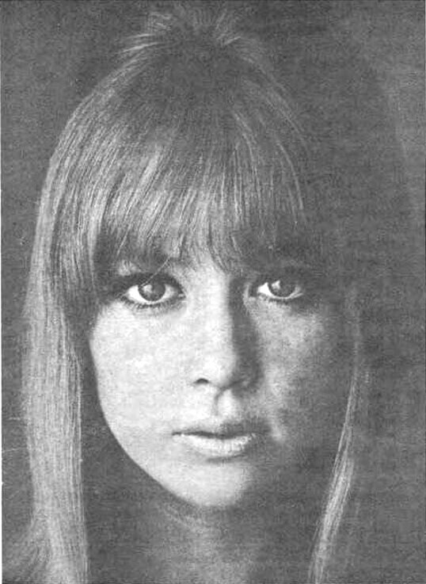

KRLA Beat / Wikimedia Commons
Two songs.
The same woman.
You listen to Something, then Layla. Two different songs, two different ways of telling a love story. And one person connecting them: Pattie Boyd.
Pattie was married to George Harrison. Eric Clapton, a friend of George’s, fell in love with her. That seemingly unattainable love inspired Layla, released in 1970 with Derek and the Dominos.
A year earlier, Something had appeared on the Beatles’ Abbey Road, written by Harrison. Pattie said George had written it for her. Harrison was less explicit about its inspiration: Pattie is part of the song’s history, although the dedication is less certain than it is often made out to be.
Pattie would later marry Clapton in 1979. But those two records, released a year apart, capture two moments in this story.
Read more: Pattie Boyd’s story and letters at Christie’s · The Guardian.